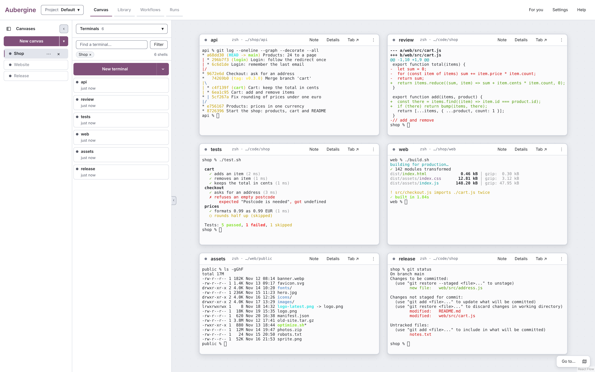

- Rethink your terminal
- Free
- Open source
- Runs on your computer
Mission control for your terminals and AI coding agents.
Run Claude Code, Codex and plain terminals side by side in one browser dashboard. Aubergine has no model of its own and never asks for a key.
npm install -g @meatgarden/aubergine
Then aubergine start --open. For macOS, with tmux 3.2 or newer and Node.js 22 or newer.

A real capture of the demo that comes with Aubergine: six terminals on one canvas, and the one that waits for you.
Terminal management, rethought
The terminals you already use, with what they were missing: a place to stand side by side, a memory, and a way to tell you when they need you.
Improve your productivity
Several agents work at once, each in its own terminal. You answer the one that waits and leave the rest to run.
A better developer experience
Every terminal has a name, a color, a note and its place on the canvas. Close the browser or restart Aubergine: they are still there.
Nothing to switch to
Your shell, your tools, your agents and your models, as they are. Aubergine adds the canvas around them and has no model of its own.
What it looks like
Real captures of the demo that comes with Aubergine: stand-in agents, no real ones.
Every terminal on one canvas
As many as you like, side by side, each live while it is in view.

The one that waits stands out
When an agent needs you, you see it from across the canvas, and W takes you there.

One terminal by itself
Open any terminal in a browser tab of its own, the same terminal and not a copy.

Ten color themes
The page comes in ten color themes, four light and six dark. You choose one of each kind, and the page is light, dark or as your system is. Single colors can be set by hand in the settings file.

Light 
Solarized light 
Gruvbox light 
Nord 
Dracula 
Gruvbox dark

A theme for each terminal
Theme… in a terminal's menu draws it in any of the ten, whatever the page is drawn in. The others follow the default you set for terminals, or the page.

Chosen in Settings
Settings → Appearance shows each theme with a small picture of its colors. A change applies at once to the page and to every terminal, and every browser you open it in agrees.

Bring your own agent
Aubergine runs ordinary terminals. It calls no model, holds no key and has no account: the command-line agents you already use, signed in as you, run in its terminals with whatever model you chose for them. What Aubergine does by itself for an agent is built for Claude Code today; any other agent can say the same things through the aubergine commands.
Claude Code
Start it from the New terminal menu and it says by itself when it works, waits for you or finishes; Aubergine can resume its conversations and show how it is set up.
Codex and ChatGPT
Codex runs in a terminal like any program, and reports through the
auberginecommands once its instructions tell it to. ChatGPT in a browser is not a terminal program.Any other command-line agent, or a plain shell
Every terminal has the
auberginecommand, andaubergine guide --snippetprints five lines for your agent's own instructions.
What else is built
All of this runs on your computer today.
A canvas of terminals
Pan, zoom and arrange real terminals, click once to type, park one and bring it back later, or open one by itself in a browser tab with its details and note beside it.
See who is waiting
Busy, idle or waiting for you, on every terminal, and the “For you” list and “next waiting” take you straight to what needs a person.
Queue and schedules
Write a task once and let a free agent take it, or schedule it for a time of day on the days you choose.
Working copies
Give each agent its own copy of a repository on its own branch, so two agents never edit the same files.
Projects
One server, several control rooms: each project has its own canvases, queue, schedules and rules, and can be saved as a file or a template.
Workflows and approvals
Give an agent steps to follow, stop at a step that waits for a person, and watch every live run on one board.
Messages between terminals
Let agents talk to each other with named senders, limits and pauses, closed by default for each canvas.
API and MCP server
A local HTTP API with scoped tokens, a typed client, and an MCP server that lists only the tools a credential may use.
A command line
The
auberginecommand starts terminals, queues tasks, sets schedules, reads the board and approves runs, from any terminal on the machine.Recaps and history
See what changed while you were away, search terminal output, and reopen past conversations from the palette.
Your terminals stay yours
Local only
The server listens on 127.0.0.1 and checks the Host and Origin of every request; use from another device stays off until you set it up.
Terminals outlive the app
Every terminal is a tmux session: close the browser or restart Aubergine and your work keeps running.
No model, no key
Aubergine does not pick or call a model, and holds no key for one; your agents bring their own.
You decide
Tokens are scoped, what agents write waits for your review, and approvals are made by a person.
What is Aubergine?
A local, browser-based canvas of terminal sessions. Each terminal is a node you can arrange and use, so you can run several coding agents at once and see which one is waiting for you.
Does Aubergine send my terminals or code anywhere?
No. Everything runs on your own computer. The server listens on 127.0.0.1 only and checks the Host and Origin of every request.
What do I need to run Aubergine?
macOS with tmux 3.2 or newer and Node.js 22 or newer; the installer also needs pnpm. On Linux it has been run in containers only. On Windows it runs only inside WSL 2, which has not been tried yet: see the guide for Windows.
What if I start Claude Code myself in a terminal?
It works like any program: you type to it as usual. But Aubergine only knows an agent is there when it started the agent itself (New terminal, then Claude Code), because it adds a few small hooks that report what the agent is doing. Started by hand, the terminal just shows as busy running claude: it is not marked as waiting for you when it asks something, and when you start a workflow there, nothing is typed for it. Tell it yourself to run aubergine workflow status, which still works from inside, or start the agent from the New terminal menu instead.
Is Aubergine free?
Yes. It is free and open source under the MIT license, and its source is on GitHub.
What is planned
Multiplayer, agents in the cloud, approval modes and more are planned and not built. See the roadmap.
Up and running in five minutes
You need macOS with tmux 3.2 or newer and Node.js 22 or newer. brew install tmux node gets both.
Install
npm install -g @meatgarden/aubergineOr use the installer, which builds from the source with pnpm.
Start it and open your browser
aubergine start --openIt starts the server and opens your browser, signed in.
Take the tour
Click Show me around on the empty canvas. It makes a Demo canvas of stand-in agents and walks you through eight short steps;
aubergine demo --removetakes it away.
The installer changes only ~/.aubergine and one link named aubergine. It never uses sudo and never edits your shell startup files.
Or have your agent install it
Paste this to the coding agent you already use. It checks what Aubergine needs, installs it, and adds a few lines to your project's instructions so that it knows how to work in an Aubergine terminal.
Install Aubergine on this computer for me, then learn how to work in it.
Aubergine shows my terminals and coding agents side by side in a browser page. It runs only on this computer and is built for macOS.
1. Check what it needs: tmux 3.2 or newer and Node.js 22 or newer. Run `tmux -V` and `node --version`. If one is missing or too old, tell me the command that would install it (with Homebrew: `brew install tmux node`) and wait for my answer. Do not use sudo.
2. Install it: `npm install -g @meatgarden/aubergine`
3. Run `aubergine doctor` and read what it says. Fix what is yours to fix and tell me the rest.
4. Do not start the server yourself: it runs until it is stopped, and it opens my browser. Tell me to run `aubergine start --open` in a terminal of my own, and to click "Show me around" on the empty canvas.
5. So that you and later agents know how to work in an Aubergine terminal, run `aubergine guide --snippet` and add the lines it prints to this project's instructions for agents (the file you read at the start of every conversation). Show me the change before you save it.
6. From now on, whenever the environment variable AUBERGINE_SESSION_ID is set, you are in an Aubergine terminal: run `aubergine guide` once, before other work, and report to me as it says.
Finish by telling me what you installed, what you changed, and anything that did not work.
The prompt is in English, as Aubergine is; your agent can answer in your language. It has not been run with a real agent yet, so read what yours proposes before you say yes. What an agent can do in a terminal is in the guide for agents.